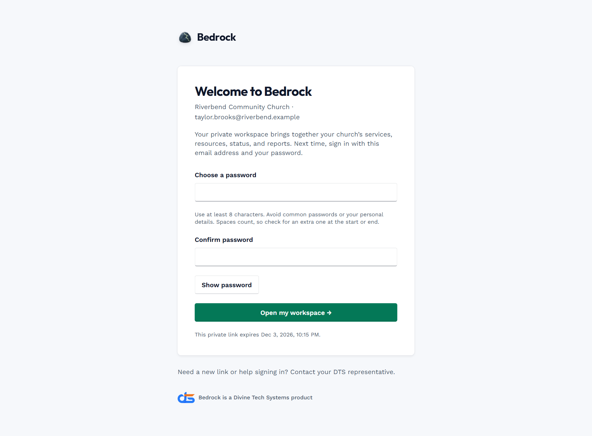
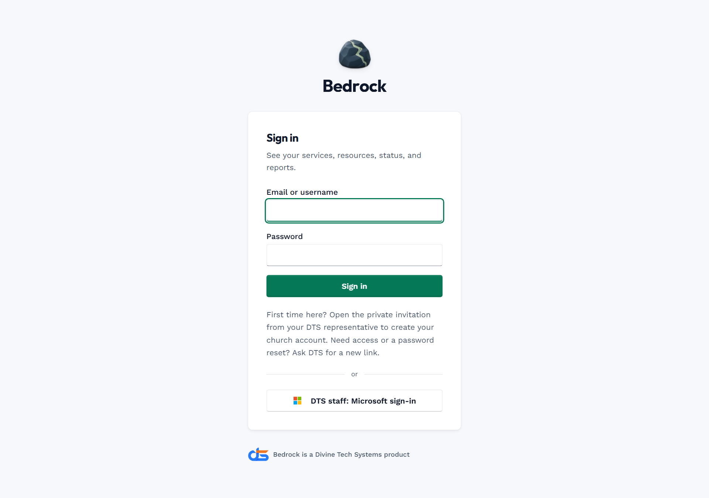
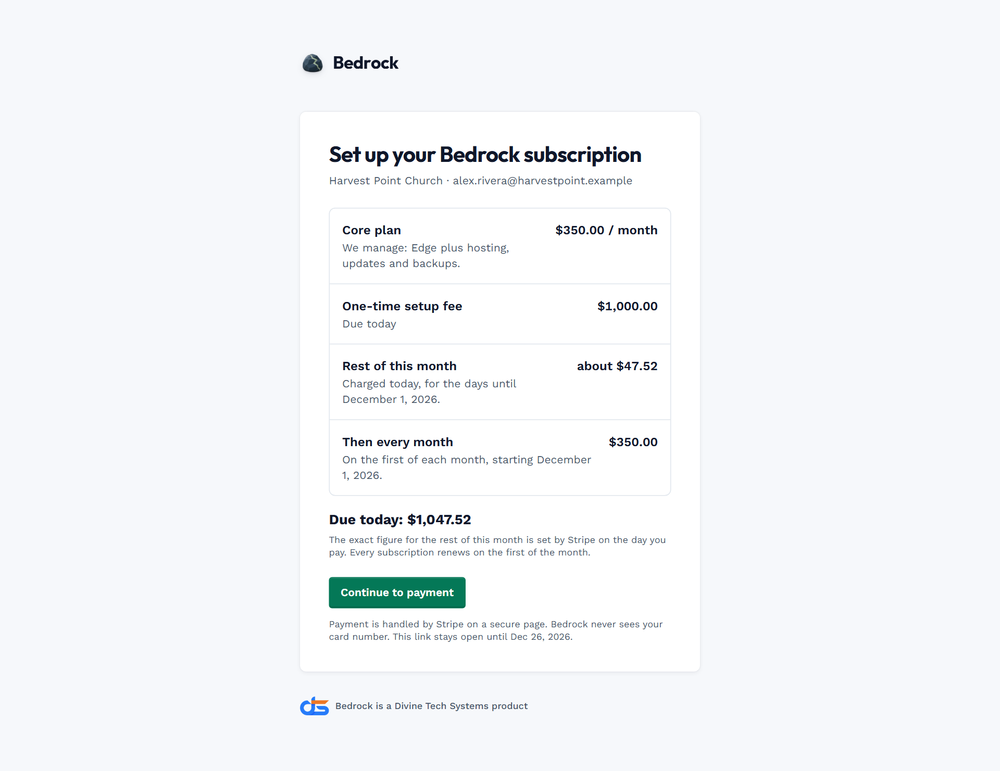
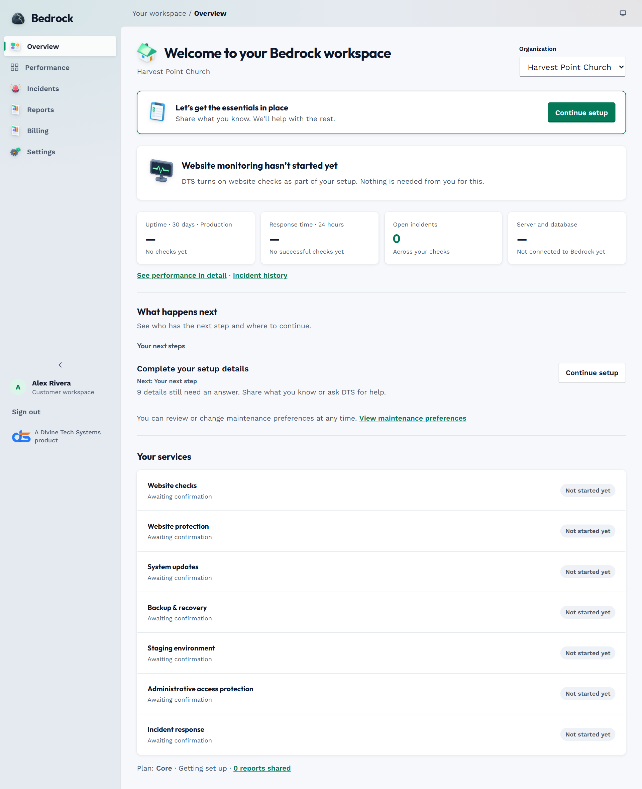
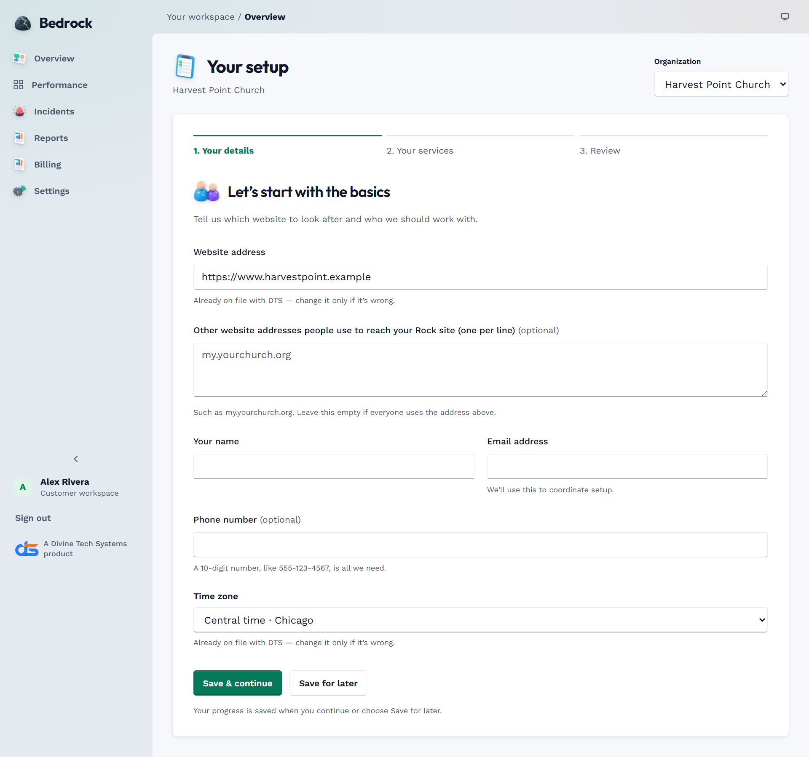

Bedrock
Getting started
You get into Bedrock with a private link, not by signing up. DTS sends the first one; after that, anyone at your church with access can invite the next person. This page covers your first visit from start to finish.
Open your invitation → sign in → set up payment (if DTS sent a payment link) → answer the setup questions → DTS takes it from there
Open your invitation
Your invitation is a link from DTS or from someone at your church. It is private to you, works once, and expires on the date shown on the page.
- Open the link. The page says Welcome to Bedrock with your church’s name and your email address.
- Type a password in Choose a password and again in Confirm password. Use at least 8 characters, and avoid common passwords and your own name or email.
- Press Open my workspace. You are signed in and land on the Overview.

If you already have a Bedrock account (for example you help two churches), the page asks for Your existing password instead, and the new church is added to your account.
“This link no longer works” means it expired, was already used, or was replaced by a newer one. Open the link from the original message rather than typing it, and if it still fails ask for a new one. Anyone at your church with access can send one from Settings, or ask DTS.
Signing in after that
- Go to bedrock.dtschurch.com.
- Type your email address and password and press Sign in.

Forgot your password? There is no “forgot password” button. Ask DTS for a password reset link; it opens a page like the invitation where you choose a new password. To change a password you still know, see My account.
Setting up payment
When your plan is agreed, DTS sends a payment link to the person who handles billing. You do not need to be signed in to use it.
- Open the link. The page Set up your Bedrock subscription shows your plan, what is due today, and what you pay each month after that.
- Press Continue to payment. You go to a secure Stripe page to enter the card. Bedrock never sees your card number.
- When Stripe brings you back, the page says Payment received. If you do not have a Bedrock sign-in yet, press Set up your portal sign-in to create one.

The link stays open until the date at the bottom of the page. If it has expired or was cancelled, ask DTS for a new one. After you have paid, everything about your subscription is on the Billing page.
Answering the setup questions
While DTS is getting your services ready, the Overview shows a banner, Let’s get the essentials in place, with a Continue setup button. It opens a short form so DTS has what it needs.

The form has three steps: Your details, Your services and Review.
- Anything DTS already has on file is filled in for you. Change it only if it is wrong.
- Share what you know. If you are not sure about an answer, say so and DTS will help.
- Save & continue moves to the next step. Save for later keeps your answers so you can come back.
- On Review, check your answers and send them to DTS.

After you send your details the page says Your details are with the DTS team. DTS reviews new details within a few business days and emails you if anything needs clarifying. The Overview’s What happens next section shows where things stand.